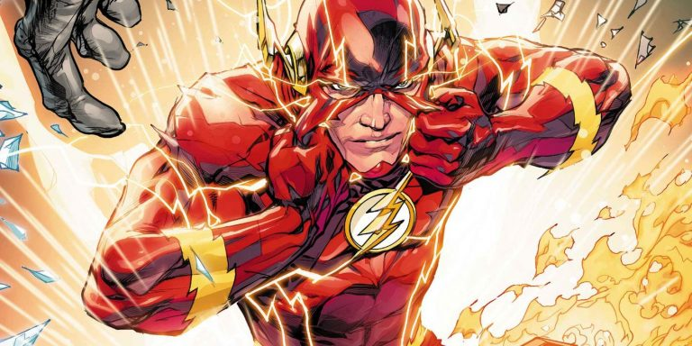

The Fastestman Alive.He is meta-human.After being struck by lightning,he wakes up from his coma to discover he's been given the power of super speed.He can travel with time in either past or future with is speed force. He has the ability to go from place to place in the blink of an eye.The Flash’s entire body is imbued with the powerful Speed Force.The result is everything that the Flash does is extremely fast The regenerative healing factor has allowed the flash to bounce back from lethal stab wounds, bone fractures, and joint dislocations in a matter of hours
